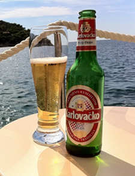

ВЕЛИКОЛЕПНАЯ СЕМЕРКА. ЛУЧШИЕ КРАФТОВЫЕ БАРЫ ПЕТЕРБУРГА
10 июля 2015
Печень береги, береги печень», – такими комментариями наполнилась группа нашего издания в FaceBook. Но, вопреки названию, мы не алкоголики, мы – дегустаторы. Однако в походе по прекрасным пивным заведениям Санкт-Петербурга было сложно ограничиться одной кружкой. Модное сейчас крафтовое пиво разливается не только в специализированных магазинах и барах, но и в заведениях более широкого профиля. Сделать обзор всех точек, где можно испить отечественный APA и IPA, не представляется возможным.
Читать всеМОРЕ БЕЗ ПИВА - ДЕНЬГИ НА ВЕТЕР. ПИВНОЙ ПУТЕВОДИТЕЛЬ ПО ХОРВАТИИ
9 июля 2015
Вряд ли, пиво – это первое, с чем у вас ассоциируется Хорватия. Что, впрочем, весьма справедливо: Хорватия – это сотни километров материкового побережья, 1145 островов, роскошная средиземноморская кухня, очень симпатичная футбольная сборная, наконец. Специализирующихся на так называемом крафтовом пиве – продукте микропивоварен (контрактных пивоварен), как иностранного, так и российского производства. Так же местные
Читать все ПЬЯНЫЙ РОСТОВ. АЛКОПУТЕШЕСТ-ВИЯ ПО РОССИИ
И НЕ ТОЛЬКО
1 июля 2015
«Зачем я поехал в Ростов», — такой вопрос задавал себе, обнимаясь с унитазом на высоте десяти километров, когда самолет уносил наши бренные похмельные тела из злополучного города. Интересно, почему вопрос «зачем» не возник чуть раньше, когда я брал билеты за какие-то пять тысяч рублей по акции. Нет, все было не так плохо, как может показаться на первый взгляд. Но Ростов-на-Дону оказался сильнее нас. Он смешал в наших желудках водку, настойки, коктейли, пиво, сидр и даже абсент, и отпустил домой, как бы говоря: «чтобы я вас здесь больше не видел».
Читать все29 июня 2015 _______________________________
18 июня 2015 _______________________________
15 июня 2015 _______________________________
10 июня 2015 _______________________________
5 июля 2015 ________________________________
1 июля 2015 ________________________________